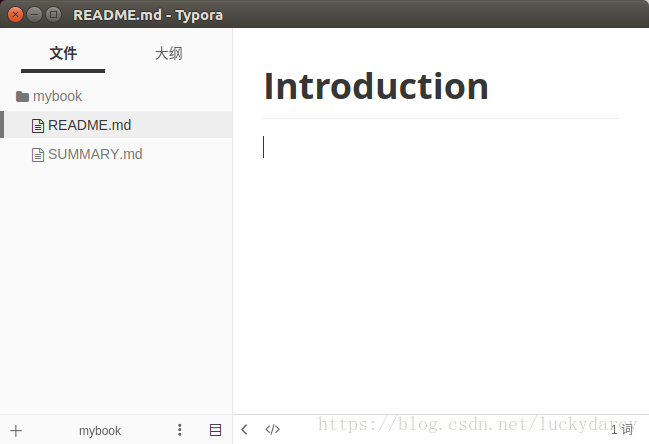
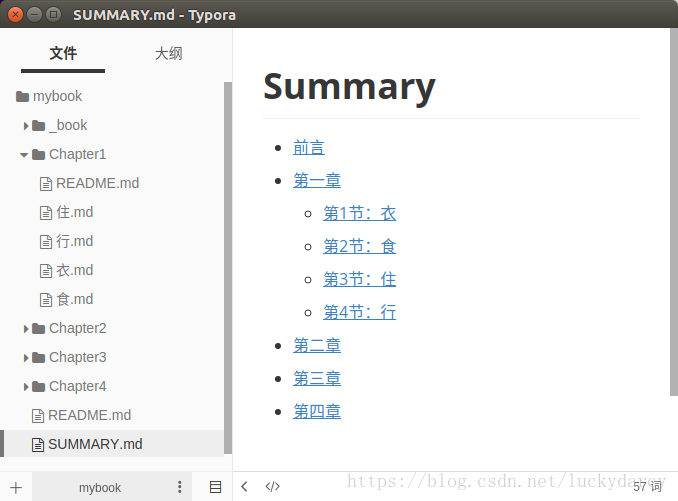
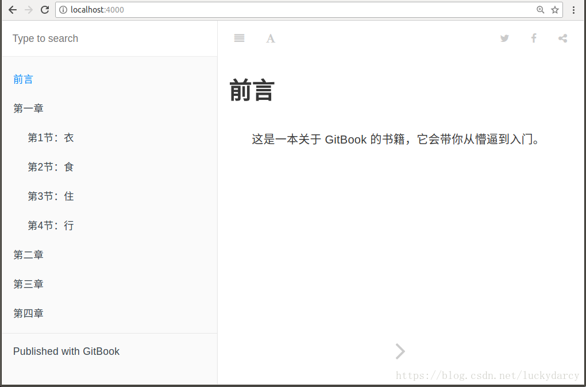

第3节：怎么办
怎么安装
当你听了我的怂恿，并决定尝试使用 GitBook 的时候，首先面临的问题是 —— 如何搭建 GitBook 环境？
因为 GitBook 是基于 Node.js，所以我们首先需要安装 Node.js（下载地址：https://nodejs.org/en/download/），找到对应平台的版本安装即可。
现在安装 Node.js 都会默认安装 npm（node 包管理工具），所以我们不用单独安装 npm，打开命令行，执行以下命令安装 GitBook：
npm install -g gitbook-cli
安装完之后，就会多了一个 gitbook 命令（如果没有，请确认上面的命令是否加了 -g）。
上面我推荐的是 GitBook + Typora + Git，所以你还需要安装 Typora（一个很棒的支持 macOS、Windows、Linux 的 Markdown 编辑工具）和 Git 版本管理工具。戳下面：
- Typora 下载地址：https://typora.io/
- Git 下载地址：https://git-scm.com/downloads
Typora 的安装很简单，难点在于需要翻墙才能下载（当然你也可以找我要）。Git 的安装也很简单，但要用好它需要不少时间，这里就不展开了（再讲下去怕你要跑啦~）。
怎么使用
想象一下，现在你准备构建一本书籍，你在硬盘上新建了一个叫 mybook 的文件夹，按照以前的做法，你会新建一个 Word 文档，写上标题，然后开始巴滋巴滋地笔耕。但是现在有了 GitBook，你首先要做的是在 mybook 文件夹下执行以下命令：
gitbook init
执行完后，你会看到多了两个文件 —— README.md 和 SUMMARY.md，它们的作用如下：
- README.md —— 书籍的介绍写在这个文件里
- SUMMARY.md —— 书籍的目录结构在这里配置
这时候，我们启动恭候多时的 Typora 来编辑这两个文件了：

编辑 SUMMARY.md 文件，内容修改为：
# 目录
* [前言](README.md)
* [第一章](Chapter1/README.md)
* [第1节：衣](Chapter1/衣.md)
* [第2节：食](Chapter1/食.md)
* [第3节：住](Chapter1/住.md)
* [第4节：行](Chapter1/行.md)
* [第二章](Chapter2/README.md)
* [第三章](Chapter3/README.md)
* [第四章](Chapter4/README.md)
然后我们回到命令行，在 mybook 文件夹中再次执行 gitbook init 命令。GitBook 会查找 SUMMARY.md 文件中描述的目录和文件，如果没有则会将其创建。
Typora 是所见即所得（实时渲染）的 Markdown 编辑器，这时候它是这样的：

接着我们执行 gitbook serve 来预览这本书籍，执行命令后会对 Markdown 格式的文档进行转换，默认转换为 html 格式，最后提示 “Serving book on http://localhost:4000”。嗯，打开浏览器看一下吧：

当你写得差不多，你可以执行 gitbook build 命令构建书籍，默认将生成的静态网站输出到 _book 目录。实际上，这一步也包含在 gitbook serve 里面，因为它们是 HTML，所以 GitBook 通过 Node.js 给你提供服务了。
当然，build 命令可以指定路径：
gitbook build [书籍路径] [输出路径]
serve 命令也可以指定端口：
gitbook serve --port 2333
你还可以生成 PDF 格式的电子书：
gitbook pdf ./ ./mybook.pdf
生成 epub 格式的电子书：
gitbook epub ./ ./mybook.epub
生成 mobi 格式的电子书：
gitbook mobi ./ ./mybook.mobi
如果生成不了，你可能还需要安装一些工具，比如 ebook-convert。或者在 Typora 中安装 Pandoc 进行导出。
除此之外，别忘了还可以用 Git 做版本管理呀！在 mybook 目录下执行 git init 初始化仓库，执行 git remote add 添加远程仓库（你得先在远端建好）。接着就可以愉快地 commit，push，pull … 啦！
不是程序员的小伙伴可能不太喜欢用命令行，那其实版本管理这部分可以下载安装 Git 或 GitHub 这些客户端程序，在图形界面上操作也是可以完成工作的。